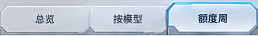
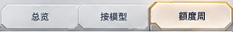
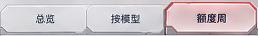
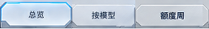
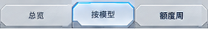
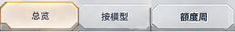
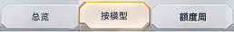
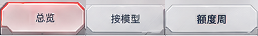
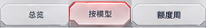

Mecha Tabs 文字层还原
三色直接参考及交互派生 Human Accepted · 文字层与面板 Frozen — 用户明确签署
仅三个固定中文标签采用背景绑定局部文字合成补片。真实按钮、真实标签语义、点击、键盘与内容切换保留。面板和33px布局未改。下方保留已签署的完整原图对照及真实组件，不要求重新签署同一浏览器图。
完整结果与边界 · 验证摘要 · 资源映射 · 工作保护
直接参考 · 完整258×36
Chromium 154.0.8037.58，DPR1、100%缩放、100%整体不透明度，无hover/focus。完整未遮罩比较；Actual来自真实生产组件运行截图。
蓝色 · 额度周选中
9,288 像素 · 不同像素 0 · 最大通道差 0
Reference · 完整258×36 Actual · 完整258×36
Actual · 完整258×36
Overlay · 完整258×36绝对差异 · 完整258×36查看4倍像素对照
黄橙 · 额度周选中
9,288 像素 · 不同像素 0 · 最大通道差 0
Reference · 完整258×36 Actual · 完整258×36
Actual · 完整258×36
Overlay · 完整258×36绝对差异 · 完整258×36
查看4倍像素对照
红色 · 额度周选中
9,288 像素 · 不同像素 0 · 最大通道差 0
Reference · 完整258×36 Actual · 完整258×36
Actual · 完整258×36
Overlay · 完整258×36绝对差异 · 完整258×36
查看4倍像素对照
交互派生 · 没有直接原图
以下状态不属于逐像素参考验收。标签键固定，补片按各自颜色、选中状态和板面背景绑定；最终观感请人工确认。
蓝色 · 交互派生
总览选中 · 没有直接原图
按模型选中 · 没有直接原图
黄橙 · 交互派生
总览选中 · 没有直接原图
按模型选中 · 没有直接原图
红色 · 交互派生
总览选中 · 没有直接原图
按模型选中 · 没有直接原图
运行组件 · 点击与键盘检查
使用现有真实 QuotaCard/TokenUsage，输入为合成数据。可点击总览、按模型、额度周，或Tab后按Enter/Space。此处为运行界面，不是截图热区。
蓝色 · 可点击运行组件
黄橙 · 可点击运行组件
红色 · 可点击运行组件
验证与边界
117组作用域、6组交互、30项标签浏览器检查、6组hover/focus、272项前端测试、既有Mecha布局323项/键盘4项及构建通过。DPR1/2留证；普通Chrome100%、125%、200%缩放已查看。
资源失败、尚未解码、缺映射、英文、其他皮肤和forced-colors均恢复真实文字。固定字图仍受字体替换、仅文字放大及个性化前景色限制；放大是1×位图插值，不能声称全套WCAG或双端原生通过。Fast及原生透明度人工状态不变。
最终全区域差异 · 资源/竞态/DPR · Hover/Focus · 外部区域与布局 · 历史非零结果